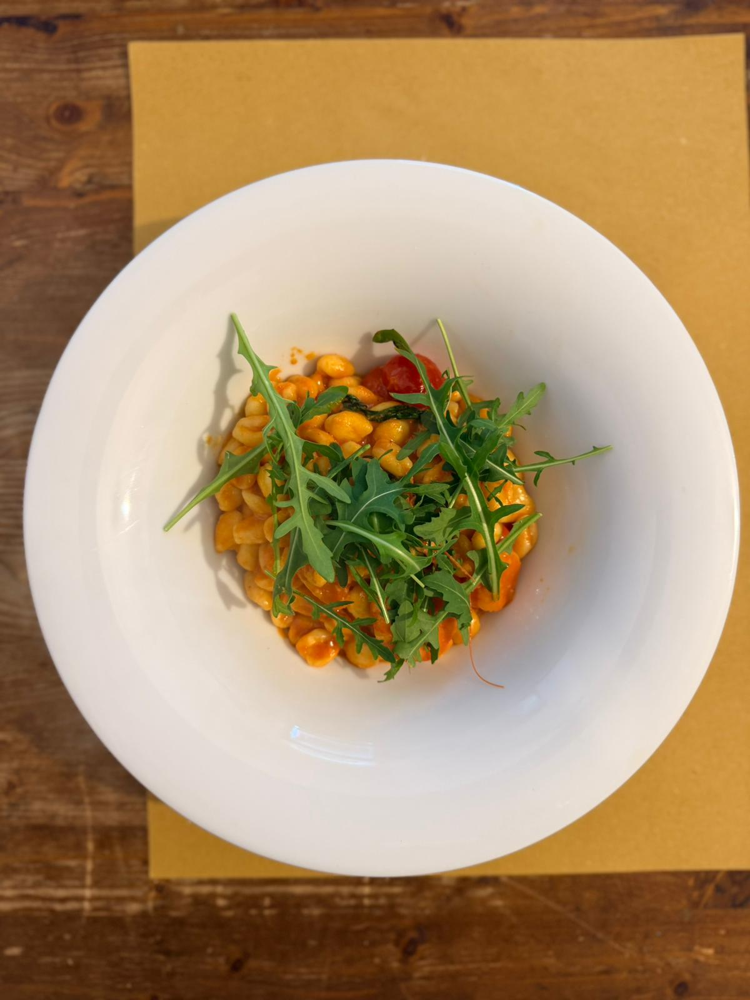
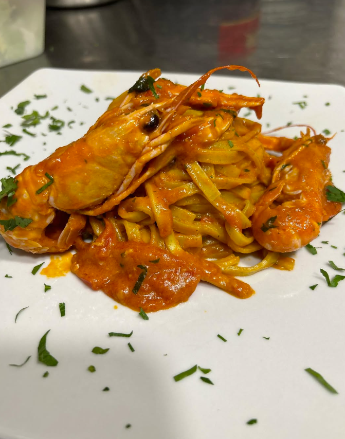
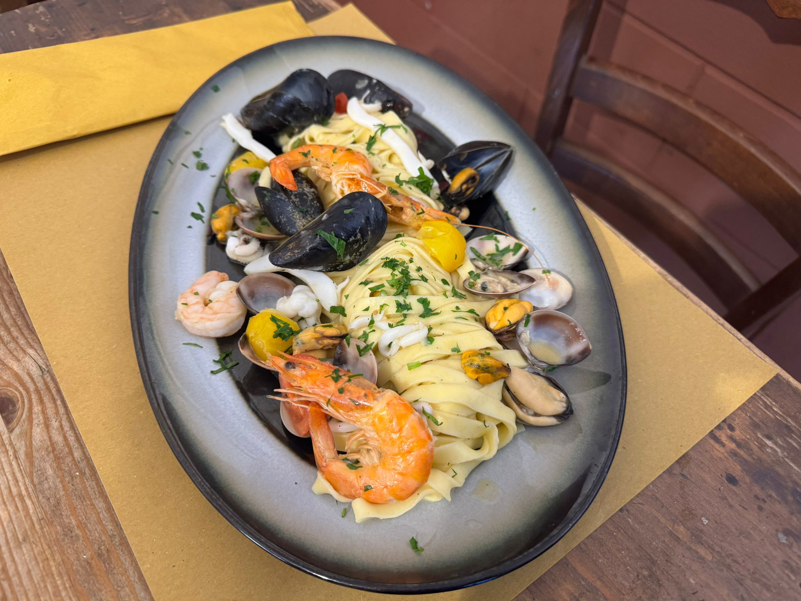
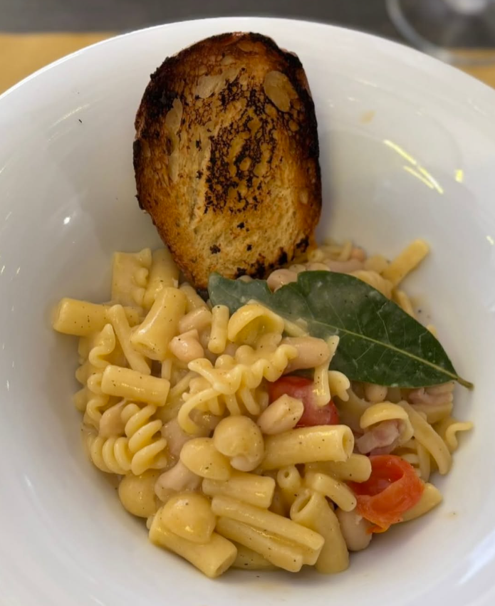
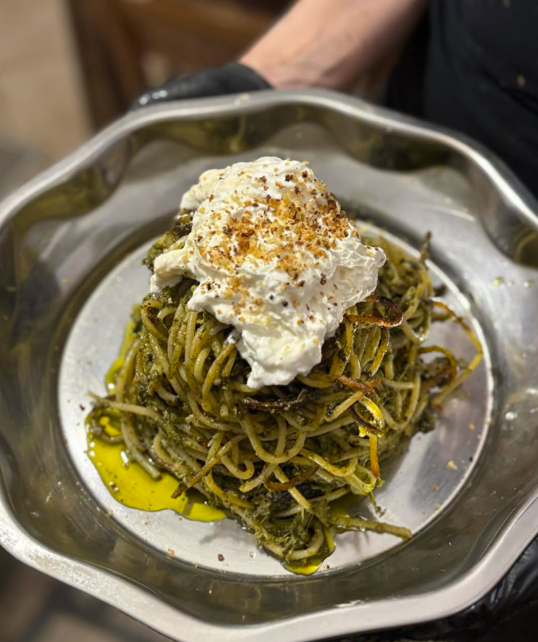

Clearer design direction
The linked skill emphasized bold intent, not generic polish. This redesign follows that by choosing a warmer editorial language from the start.
A warmer, more editorial direction for the website, built around texture, atmosphere, and a clear point of view instead of generic restaurant patterns.

The linked skill emphasized bold intent, not generic polish. This redesign follows that by choosing a warmer editorial language from the start.
Typography, spacing, and atmosphere now work together instead of competing with multiple unrelated styles.
The project stays fully static and simple to maintain, while feeling much more premium on both desktop and mobile.

Seasonal produce, honest cooking, and a more immersive visual story.
The project now leans into warmth, texture, and contrast. The goal was to make the website feel memorable and designed, while preserving clarity and usability.
That means stronger typography, more atmospheric sections, and a composition that feels more like a crafted restaurant brand than a generic landing page.
View the dishesA tighter visual presentation helps the food do more of the talking, while making the site feel much more contemporary.

Sharp, toasted, unmistakably Bari. A dish with instant personality.

Sea-driven, elegant, and rich without becoming heavy.

A simple opener with enough character to set the tone immediately.
Instead of a plain image list, the gallery now adds rhythm, scale changes, and atmosphere to support the brand story.

Rich color, strong ingredients, direct visual impact.

Shared plates and immediate generosity.

The redesign leaves more room for story and place.

Depth, comfort, and home-style confidence.

One of the clearest signals of Apulian identity.
The testimonials remain interactive, but the visual treatment is cleaner and more integrated with the rest of the site.
The contact area is now easier to scan and visually stronger, while keeping all booking actions obvious and fast.